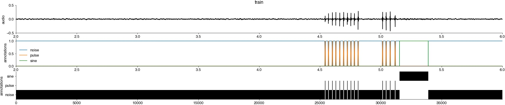
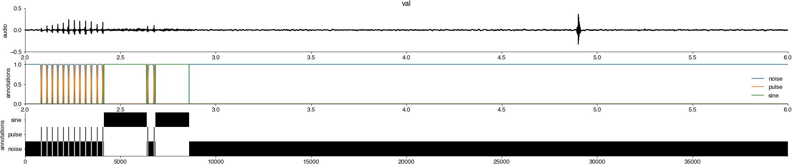
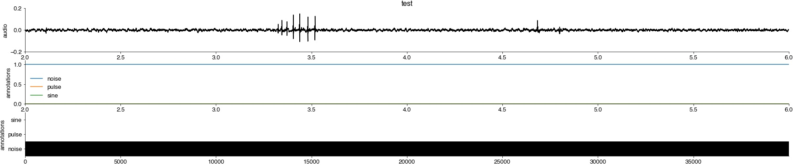

Inspect dataset¶
%config InlineBackend.figure_format = 'jpg' # smaller mem footprint for page
import das.npy_dir
import numpy as np
import matplotlib.pyplot as plt
plt.style.use('ncb.mplstyle')
ds = das.npy_dir.load('tutorial_dataset.npy')
Print dataset information¶
print(ds)
Data:
test:
y_pulse: (4000001, 2)
y_sine: (4000001, 2)
x: (4000001, 1)
y: (4000001, 3)
train:
y_pulse: (8090002, 2)
y_sine: (8090002, 2)
x: (8090002, 1)
y: (8090002, 3)
val:
y_pulse: (4150001, 2)
y_sine: (4150001, 2)
x: (4150001, 1)
y: (4150001, 3)
Attributes:
class_names: ['noise', 'pulse', 'sine']
class_names_pulse: ['noise', 'pulse']
class_names_sine: ['noise', 'sine']
class_types: ['segment', 'event', 'segment']
class_types_pulse: ['segment', 'event']
class_types_sine: ['segment', 'segment']
filename_endsample_test: []
filename_endsample_train: []
filename_endsample_val: []
filename_startsample_test: []
filename_startsample_train: []
filename_startsample_val: []
filename_train: []
filename_val: []
samplerate_x_Hz: 10000
samplerate_y_Hz: 10000
filename_test: []
Plot audio and annotations¶
Plot, for the train, validation, and test set:
the audio
the training targets as line plots
the training targets as a pseudo-color plot (black - high probably, white - low probability).
Adjust the start and duration, start_seconds and duration_seconds, to plot a part of the recording that should have annotated song.
Things to check:
alignment between audio
xand training targetsywidth of events is appropriate
completeness of annotations
In the example below the test set is incompletely annotated around 3.5 seconds.
start_seconds = 2
duration_seconds = 4
for typ in ['train','val','test']:
t0_samples = int(start_seconds * ds.attrs['samplerate_x_Hz'])
t1_samples = int(t0_samples + duration_seconds * ds.attrs['samplerate_x_Hz'])
tx = np.arange(t0_samples, t1_samples) / ds.attrs['samplerate_x_Hz']
plt.figure(figsize=(30, 6))
ax = plt.subplot(311)
plt.plot(tx, ds[typ]['x'][t0_samples:t1_samples], 'k')
plt.title(typ)
plt.ylabel('audio')
t0_samples = int(start_seconds * ds.attrs['samplerate_y_Hz'])
t1_samples = int(t0_samples + duration_seconds * ds.attrs['samplerate_y_Hz'])
ty = np.arange(t0_samples, t1_samples) / ds.attrs['samplerate_y_Hz']
plt.subplot(312, sharex=ax)
plt.plot(ty, ds[typ]['y'][t0_samples:t1_samples, :])
plt.legend(ds.attrs['class_names'])
plt.ylabel('annotations')
plt.ylim(0, 1.1)
plt.subplot(313)
plt.imshow(ds[typ]['y'][t0_samples:t1_samples, :].T.astype(np.float), cmap='Greys')
plt.yticks(range(len(ds.attrs['class_names'])), labels=ds.attrs['class_names'])
plt.ylabel('annotations')
plt.show()


